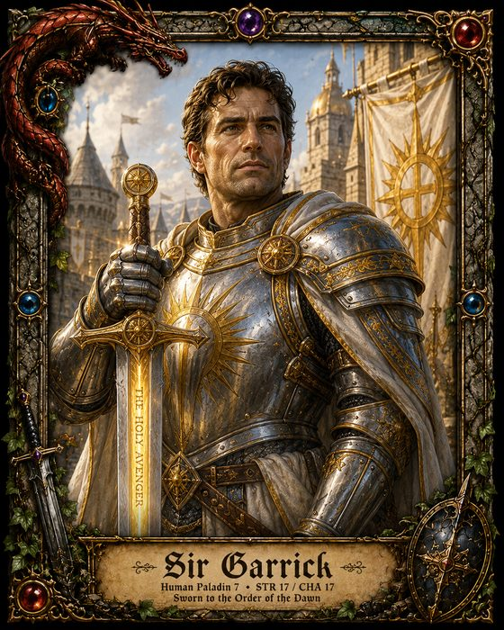

D20 Adventurer’s Folio
Fortuna Audaces Iuvat

Character sheets worth framing. A hand-painted folio for classic tabletop roleplaying — keep your heroes as living sheets on iPhone and iPad, roll dice that feel like dice, and print a page worth putting on the table.
Most character-sheet apps are forms

This one is a folio — an illuminated page you actually want to look at, with your character’s numbers typeset into it as though a scribe had filled them in.
Nothing is a text box. Every value is set into the painted art at the place the art left for it. Tap a saving throw and the dice roll. Tap a score and edit it where it sits.
Drop in a picture of your hero and it clips into the painted window, under the same stone-and-gilt arch the page was drawn with.
Dice with weight

A real tray, in three dimensions, with dice that tumble and settle. Tap a save, a check or an attack anywhere on the sheet and watch it land — then read the verdict off the felt.
The sets are collector-grade: gemstone, metal, wood and bone, each one modelled rather than tinted.

Two rules families, painted separately

First-edition Advanced and fifth edition, each with its own painted panels and its own derived stats — THAC0 and the five saves on one, proficiency and the six saves on the other. Neither is a reskin of the other.
Eleven classes, each with its own ledger page, its own seal and its own palette.


Bring a character. Or roll one in ten seconds.
Quick Hero rolls a legal character for the edition you pick — class, race, alignment, scores, hit points and all — and lets you trade points around before you keep it. Or build one by hand, a line at a time.



What’s inside
- Living sheets. Every value typeset onto painted art, editable in place.
- Dice with weight. A 3D tray with collector-grade sets — tap a save or a check and watch it land.
- Two rules families. First-edition Advanced and fifth edition, each with its own painted panels and its own derived stats.
- Eleven classes. Class-themed pages, ledgers and seals.
- Print-perfect PDFs. Two pages, US Letter, ready for pencil and ink.
- Portraits. Drop in a picture of your hero; it clips into the painted window.
Yours, on your device
The folio has no accounts, no sign-in and no servers. It collects nothing about you, and it never sends your characters anywhere. It works with no signal at all. See the privacy policy — it is short, because there is very little to say.
Requirements
iPhone and iPad, iOS 17 or later.
Need a hand?
Questions, bugs and feature requests are all welcome — see the support page.